{kind=link}
Biohacking a dog with wieners, a laser cutter, and robotics.
What?
That title sounds bad but I'm not sure what else to call it. I'm not sure this even qualifies as biohacking.
Basically:
Is it possible to remotely control a dog by changing the angle of a wiener dangling in front of its face?
Why?
The backpack mechanism was designed in SolidWorks.
| 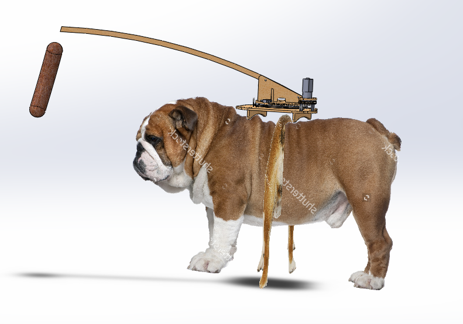 |
| SolidWorks CAD model |
{kind=link}
This entire project was based around my family's english bulldog Barkley, so I found and imported side and rear bulldog reference images for a rough size layout. Fun fact: the images are different genders.... I feel weird having brought that up.
SolidWork's Toolbox was used to generate the gear profiles.
| 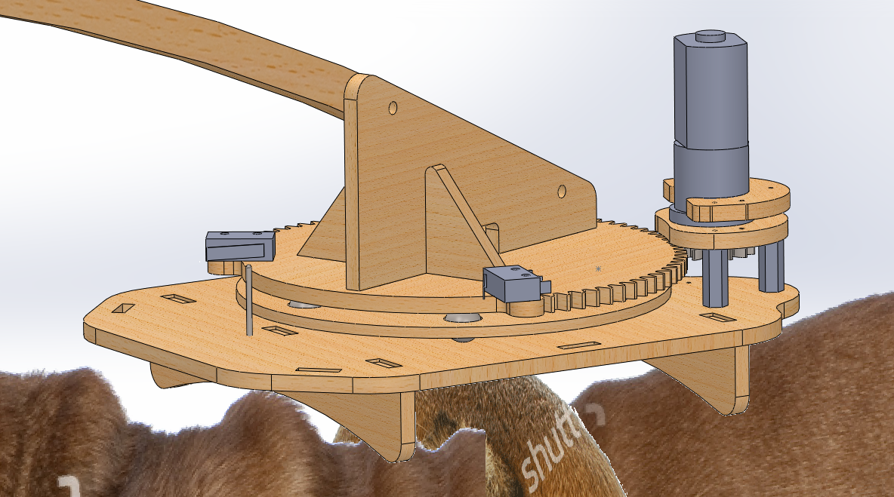 |
| Closeup |
{kind=link}
Six glass marbles and a wooden retainer create a thrust bearing for the pivot mechanism. This works exceptionally well for the price, but I have no guarantees for long term performance. I've actually done this before on my Pumpkin Combat Robot. The shaft is a 1/4-20 bolt with two flange bearings pressed into the wood.
Two limit switches will keep the hotdog within 120 degrees of the dog's face.
| 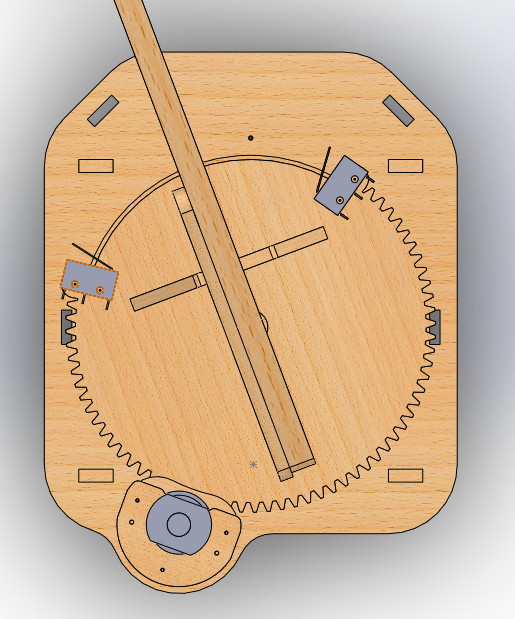 |
| Top view |
{kind=link}
All of the pieces were cut on RetnaSmelter9000 my homebuilt 80w laser cutter.
| 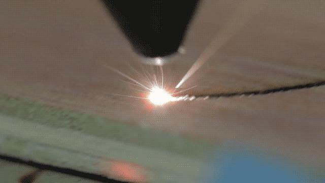 |
| Laser cutting |
{kind=link}
RetnaSmelter9000 is the best.
Here the glass marbles are being installed. I bought really cheap marbles and many aren't so round...
| 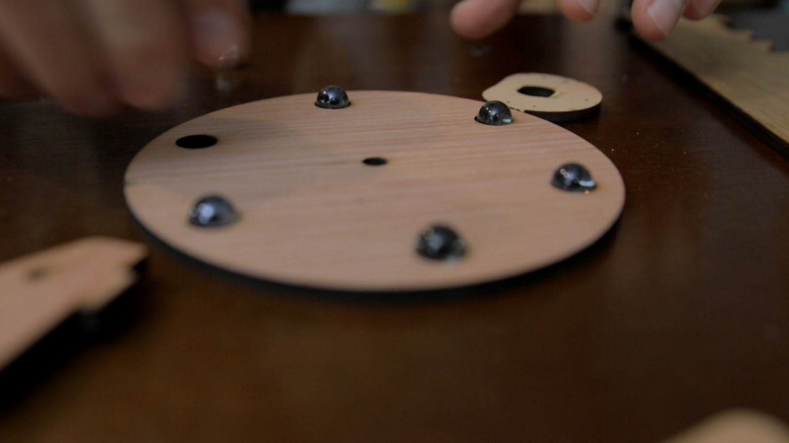 |
| Thrust bearing marbles |
{kind=link}
This is halfway through the assembly. The motor is clamped between two pieces of plywood and spaced with three threaded standoffs.
| 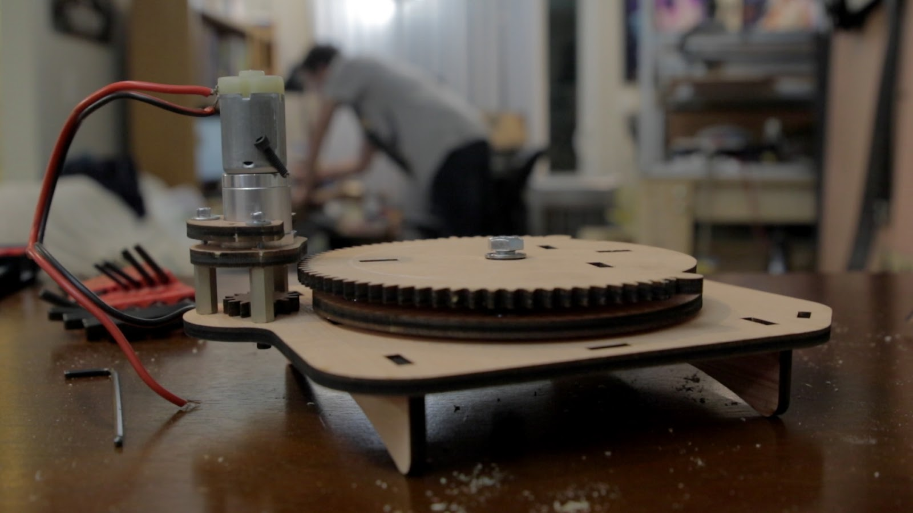 |
| Motor mount |
{kind=link}
I'm gonna review my year old barely used $220 brushless Bosch drill right now:
"0/10 when it doesn't work, 8/10 when it does" - me
When it doesn't work, the drill gets stuck where pulling the trigger does nothing. A little twist of the chuck, and it starts working again. I sent it in under warranty and they claimed it was fixed. It still gets stuck... You can see this crappy behavior in the build portion of the video.
When the drill does work, there's a noticeable delay when pulling the trigger. I've played with a few other brushless drills which don't have this problem. It's annoying but not unbearable.
| 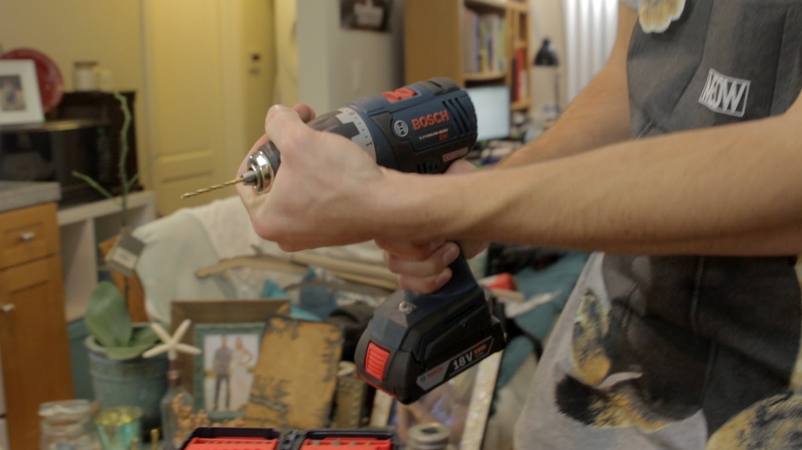 |
| Stuck Bosch drill |
{kind=link}
Uhhhh
Here's the finished doggy bio-backpack and early electronics
 |
| Finish mechanical assembly |
Electronics and Firmware
I started writing code on an Arduino Mega for its extra hardware serial ports. I need two serial ports to communicate with both COSMOS and a Sparkfun 9DOF IMU. A software serial port may work, but I don't want to deal with that. The final robot uses an Arduino Leonardo.
| 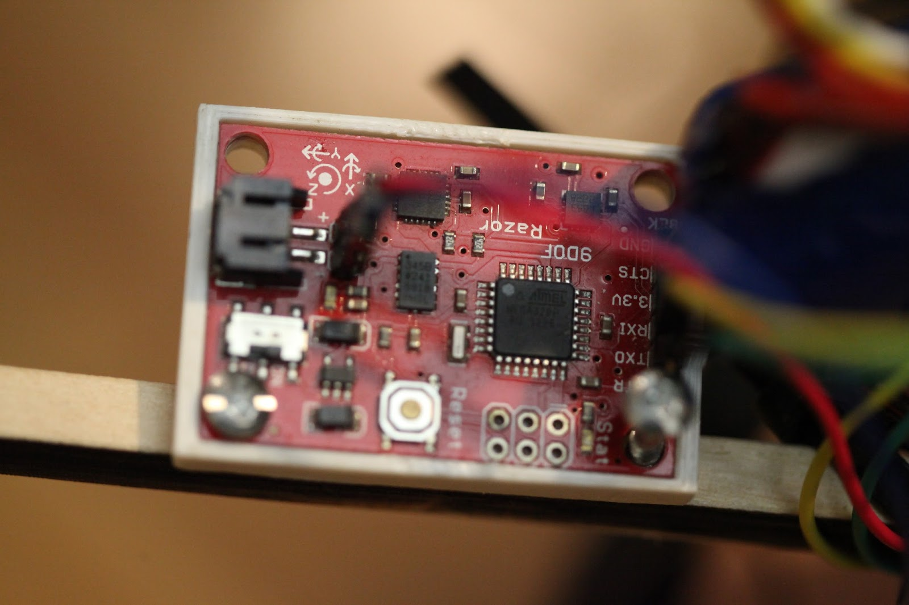 |
| Sparkfun 9DOF IMU |
{kind=link}
This IMU (inertial measurement unit) outputs orientation information by mixing data from an accelerometer, gyro, and magnetometer. Initially it was screwed to the platform, but had to be moved onto the hotdog stick to avoid the strong magnetic fields produced by the motor (thanks James).
COSMOS is awesome powerful free software which lets you communicate and display data from your devices. It's like realtime Excel. Below is a view of the hot dog's measured angle, desired angle, and motor power.
| 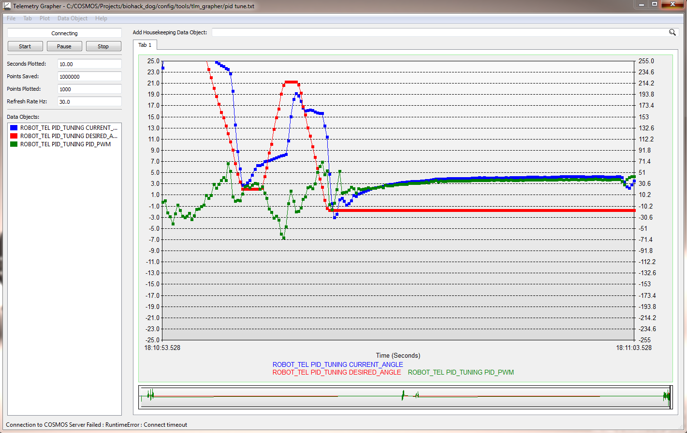 |
| COSMOS graphing |
{kind=link}
We are going to use COSMOS, the IMU, and a PID control algorithm to drive our dumb DC motor to a desired angle. I'll hopefully make a more detailed post of PID one day, but essentially it's simple math which is used to generate an output based on the current system error. The output is how much motor power (PWM in this case). System error is the difference between the measured angle and desired angle. This PID loop is repeated ones to thousands of times per second depending on the application.
PID stands for proportional, integral, and derivative. They are three components which are calculated, scaled, and added together to output a control signal. We can tune the PID loop by adjusting the scale values.
This is what each component does:
- Proportional - proportional to the error, so more error more power.
- Integral - error over time, more power the longer the error has persisted.
- Derivative - change in error, dampens fast errors.
Tuning is kindof an artform, and having some sort of visual output really helps; COSMOS is how I visualized the output for tuning. When the desired angle and measured angle are different, a motor power is calculated and the measured angle does something. We want that something to be the measured angle closing in on the desired angle as quick as possible.
This is what a poorly tuned system looks like in COSMOS:
| 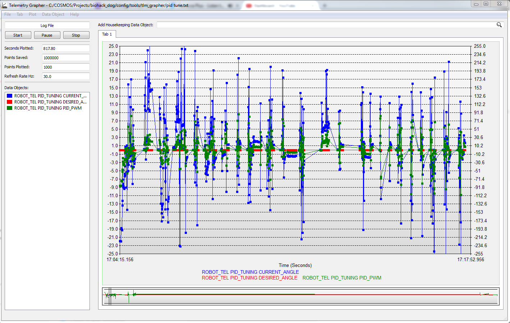 |
| Bad PID tune |
{kind=link}
This is what it looks like in real life... The desired angle isn't changing, but the arm is oscillating all over the place.
 |
| Bad PID tune in real life |
This is what decent tuning looks like in COSMOS:
| 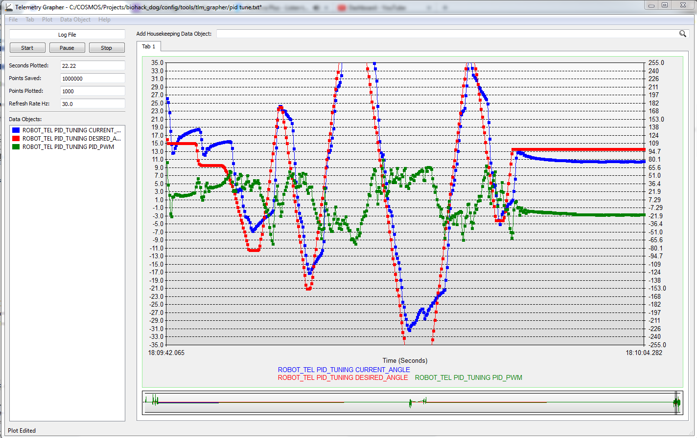 |
| Decent PID tune |
{kind=link}
The measured angle is hugging the desired angle. That clipped spike bottom middle is probably from hitting a limit switch.
This is what a decent tune looks like in real life:
 |
| Decent PID tune in real life |
Hobby servos work in this exact same manner, except their feedback is an internal potentiometer instead of the IMU.
| 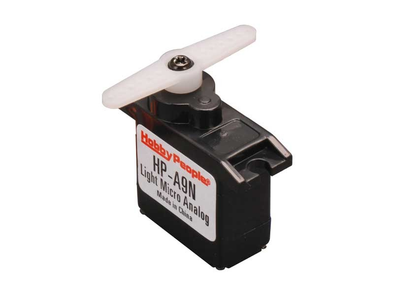 |
| Hobby servo |
{kind=link}
I used a cheap Chinese H bridge motor driver to amplify the PWM signal generated by the Arduino.
| 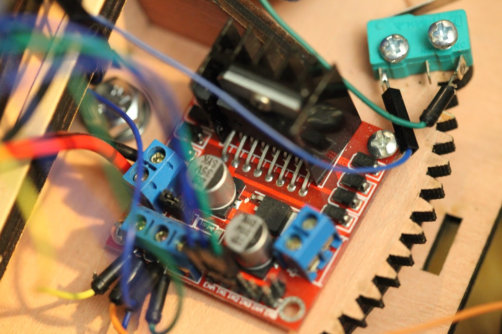 |
| H bridge motor driver |
{kind=link}
A small 0.1uF ceramic capacitor on the motor inputs to help reduce any noise.
| 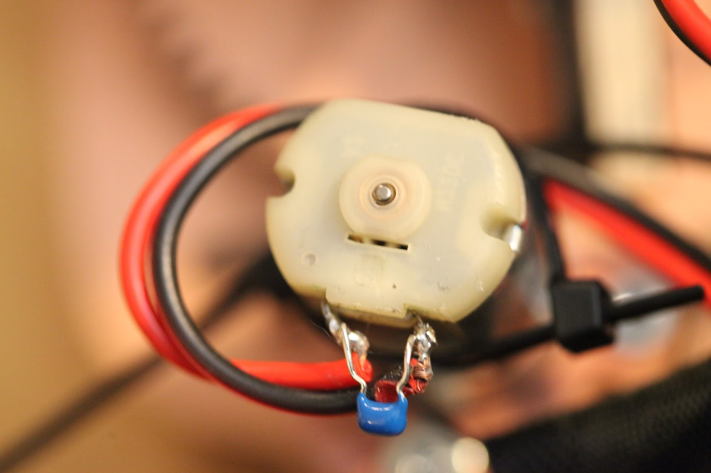 |
| 0.1uF ceramic motor capacitor |
{kind=link}
The Arduino Leonardo and bundle of jumper wires... Normally I'd try to make something less janky.
| 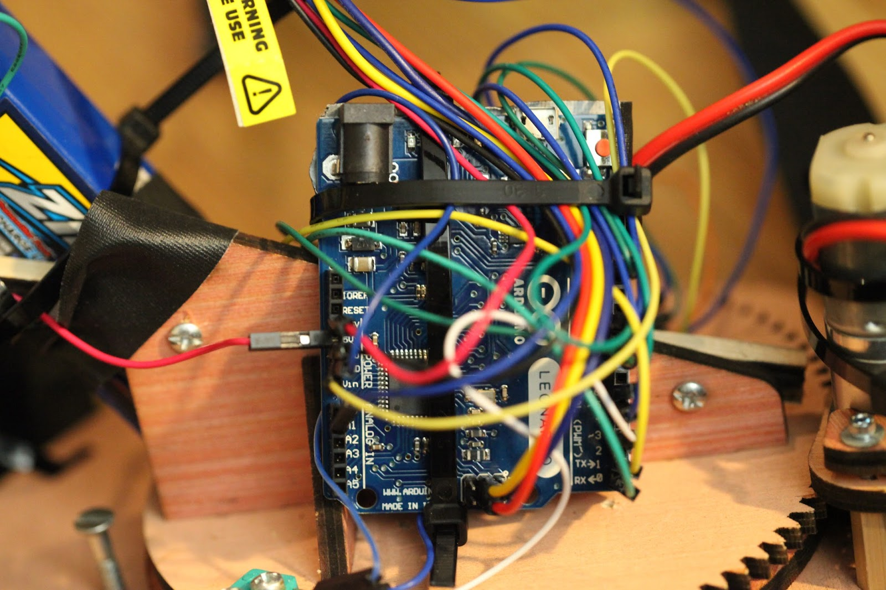 |
| Arduino Leonardo |
{kind=link}
| 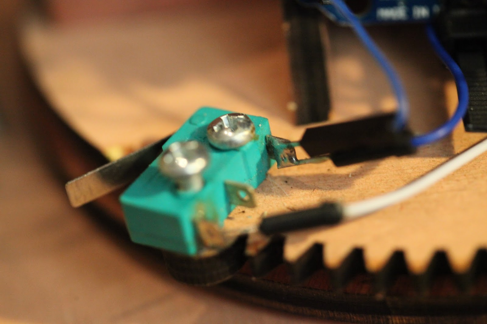 |
| Limit switch bodgery |
{kind=link}
| 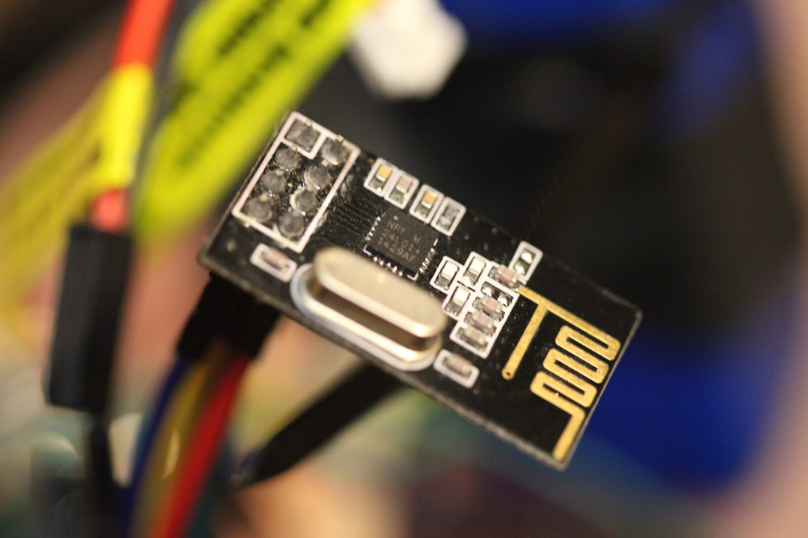 |
| nrf24l01 wireless transceiver |
{kind=link}
| 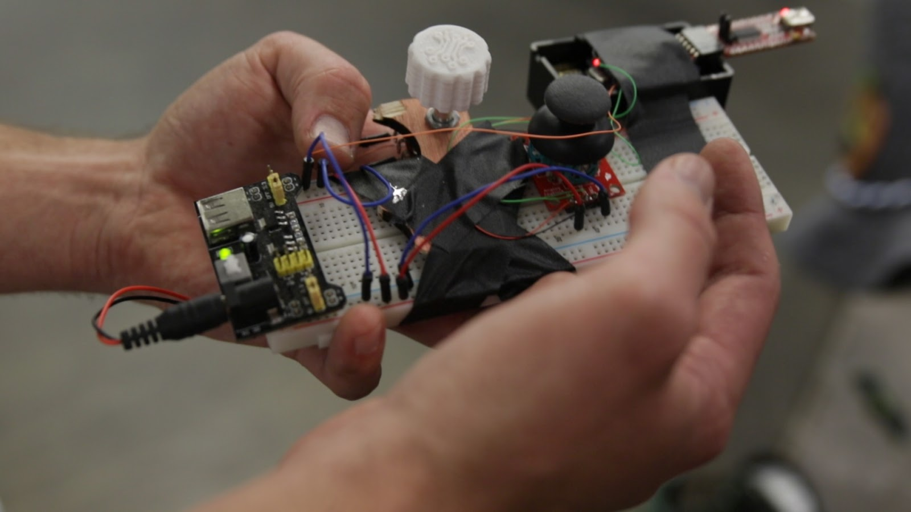 |
| Remote control |
{kind=link}
Functionality
The remote control sends an angle command to the backpack. The joystick increments and decrements this angle value; the center position means no change in angle.
The backpack records its initial angle when booted and interprets all angle commands relative to it; this prevents violent swings on startup. The motor isn't powered until the backpack receives radio commands. For safety, the motor is shut off if radio commands haven't been received for 2 seconds.
The limit switches prevent the motor from swinging the hotdog out of the dogs vision, The hotdog arm will sit at the limit switch as long as the desired angle is behind it.
Results
 |
| First test |
Welllllllllll it kindof works. I think I need a better dog. I'm not going to try and explain how it went down, so go to ~4:30 into the video for the full test.
| Youtube Comment by Sasha Prs |
{kind=link}
| Translated from Russian |
{kind=link}
Conclusion
The motor kill on dead radio was awesome! When weird things happened, like the limit switch getting stuck, I could just shut the remote off and the motor would stop.
Turning the remote back on without resetting the backpack would cause a violent jump, since the remote angle was reset to zero. I should send the increments over radio instead of a hard angle.
There is an issue with angle winding, since I protect against IMU rollover (360 to 0) by counting beyond 360 degrees. This means the dog potentially needs to spin around multiple times to get to your desired angle.... Obviously this is not what we want.
The motor tuning works pretty well. The only issues are a large amount of backlash between the wood gears, and friction in the motor's gearbox. Both of these are apparently difficult phenomenon to counter in a control system.
The End
That's it, until maybe I listen to people's suggestions to try this with a laser pointer on a cat.....
Interesting idea, but the dog will eventually lose interest if he isn't able to catch the hot dog once in a while. It's the same thing with toy rope tug of war; you have to let them win sometimes.
ReplyDeleteGreat video! One quick suggestion: how about securing the hot-dog to the end of the rod so it does not dangle around. From what I could tell from the video, the swinging confused the dog and he lost interest. Also, what college did you go to for your "expensive" degree. If I had to guess I would say MIT, but maybe Cornell? (I'm a student there so it would be awesome if you did haha)
ReplyDelete